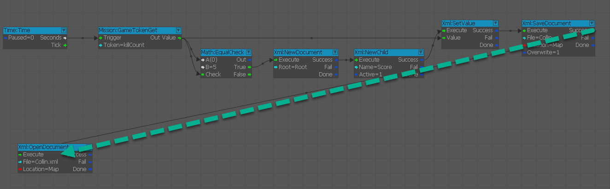
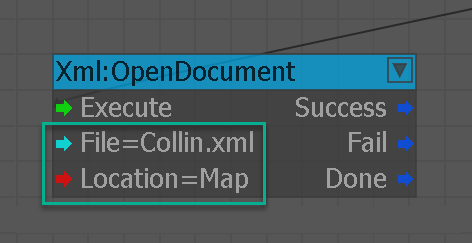
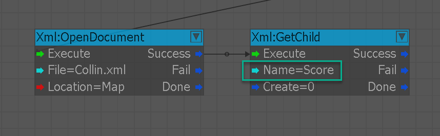
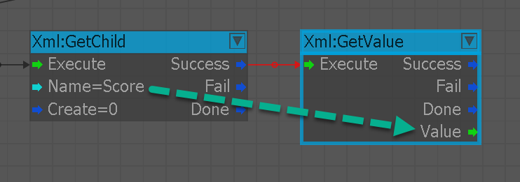
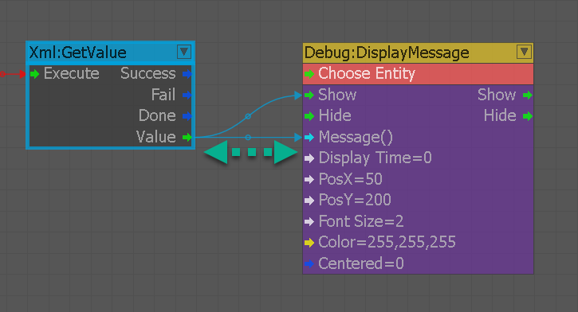
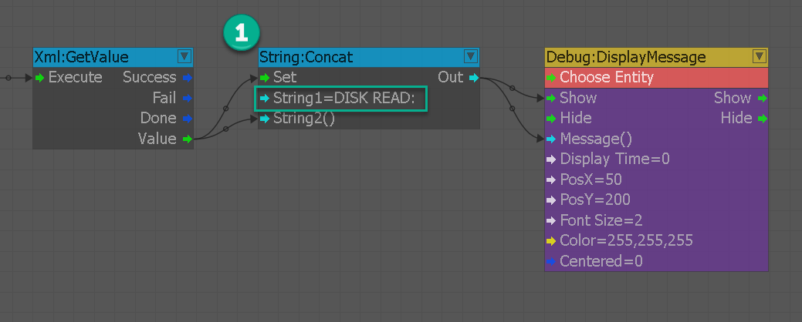
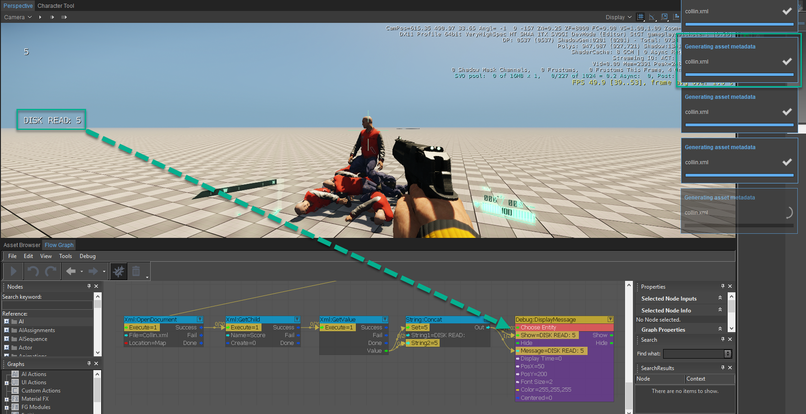

Теперь, когда мы изучили, как записывать данные на диск, давайте посмотрим, как читать данные, которые мы только что записали. 8 – письмо на адрес XML. Логику этого довольно легко понять: как мы откроем документ, а затем снова получим дочерний элемент и счет, расположенный в нем.
Чтобы закончить урок, мы воспользуемся узлом конкатенации строки, которая предваряет атрибут оценки и выводится на экран через сообщение отображения в области просмотра.
Как читать XML
Выполните следующие действия, чтобы прочитать данные XML в Flow Graph:
- Создайте XML:OpenDocument узел и передавая Успех порт XML:SaveDocument с предыдущего урока в Выполнить входной порт.
- Внутри XML:OpenDocument, найдите имя документа, который мы сохранили в предыдущей главе, и в этом случае добавьте .xml (пример: Collin.xml)
- Создайте XML:GetChild узел, а затем мы будем искать дочернего элемента Оценка который мы объявили в предыдущей главе, и подключим Успех порт из XML:OpenDocument узел.
- Создайте XML:GetValue узел и соедините Успех порт XML:GetChild узел в Выполнить триггер XML:GetValue.
- Возьмите значение и передайте его Строка: Конкат узел, чтобы добавить «DISK READ:» к нашему печатному тексту и вывести его в Отладка DisplayMessage узел, чтобы отличить прочитанный текст от напечатанного.
- Заходим в игру(Ctrl+Г) и убийство 5 AI должны отобразить текст, аналогичный показанному на изображении ниже.
Шаг 1

Шаг 2

Шаг 3

Шаг 4

Шаг 5-1

Шаг 5-2

Окончательный результат

Заключение
Несмотря на то, что это руководство завершено, не стесняйтесь идти по своему собственному пути разработки, основываясь на том, что мы рассмотрели в предыдущих главах. Для получения информации по темам, рассматриваемым в этом руководстве, и многому другому., пожалуйста, обратитесь к Руководство CRYENGINE V.